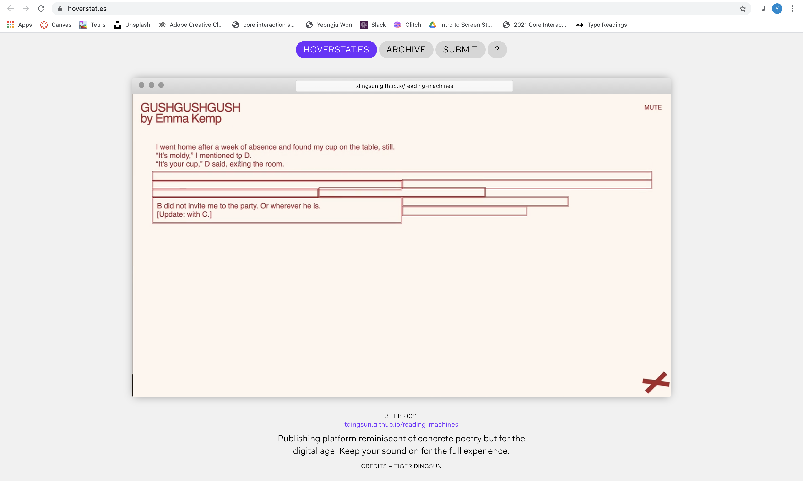
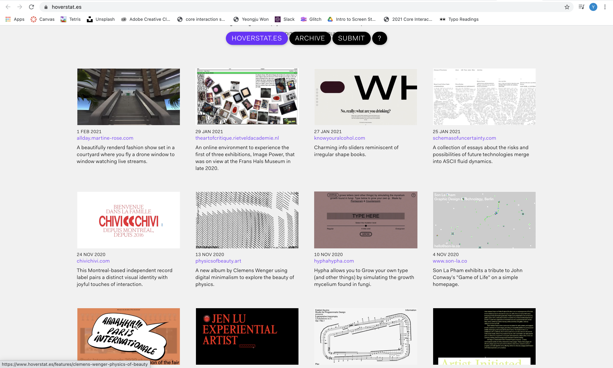
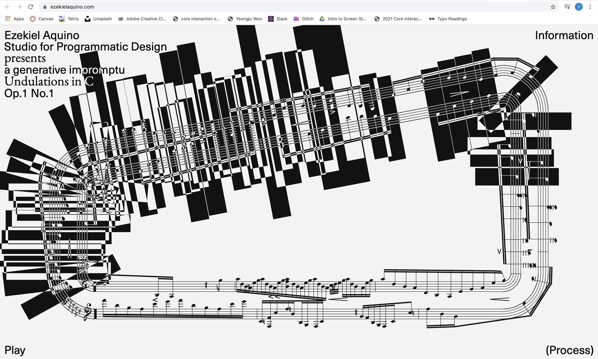
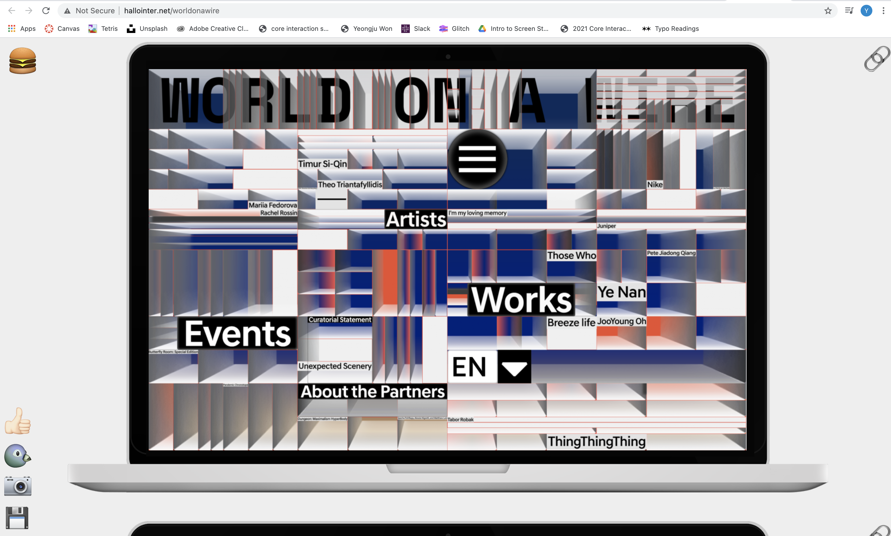
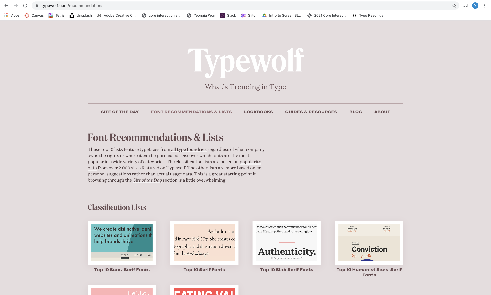
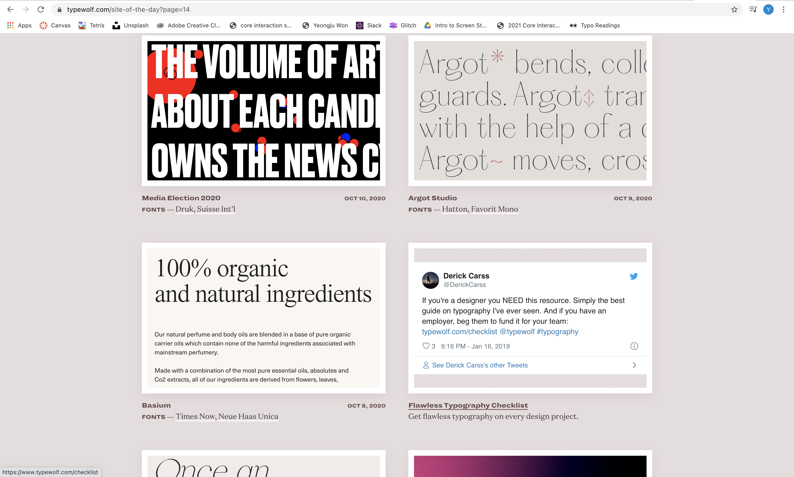
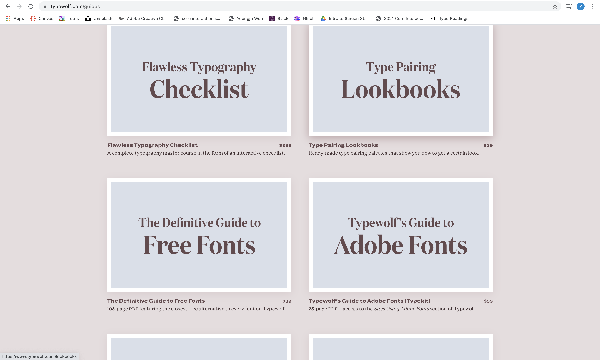
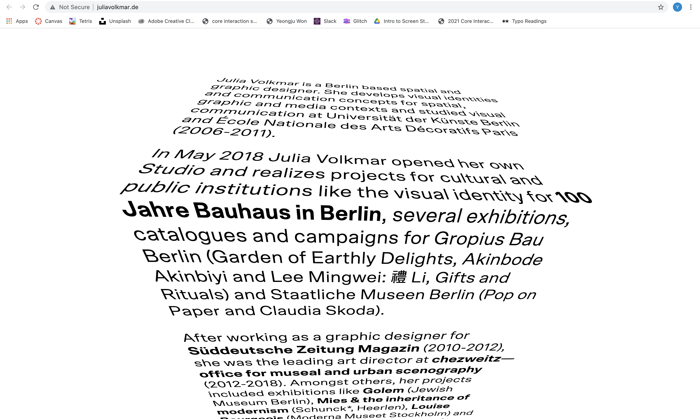

Type & Interaction Study
5 examples of interesting/confusing/distinct interactions on the web
- https://www.hoverstat.es/

I was confused on which links were meant to be hovered over
until I actually did and some change was made or something popped up
- https://www.hoverstat.es/

I found it interesting how some features highlighted when I hovered over it so it was easier to read.
- https://newdawn.digital/

I found this virtual interaction is very interesting and the overall website is very organized.
- https://ezekielaquino.com/

I think the texture and pattern created with the music is interesting
but I was confused on what the purpose of it was.
- http://hallointer.net/worldonawire

I did not like this one at all I found it very confusing because there were so many
things going on as well as nothing would actually indicated that it is being hovered over
other than the fact that my mouse goes from just a pointer to the clicker hand thing.
5 examples of interesting/ugly/beautiful typography on the web
- https://www.typewolf.com/

I found the font GT Alpina Typewriter, Lausanne very interesting because
t reminded me of what I think code and just a simple computer type would have looked like
but in script form so it has a contradicting mixture of both old and new.
- http://www.gabischirrmacher.de/

I think the simple design of the website works nicely with the sans serif typeface.
- https://www.typewolf.com/

I like the the bubblyness of the Sometimes Times, FF Bau, DM Mono font and how clean it looks.
- https://www.typewolf.com

I really disliked the Whyte, Media Sans font because it looked like it was printed poorly or
something was wrong with the font because glimpses of it were cut out.
- http://juliavolkmar.de/

I like how the type is arranged in the website, almost like it is placed on top of the box.